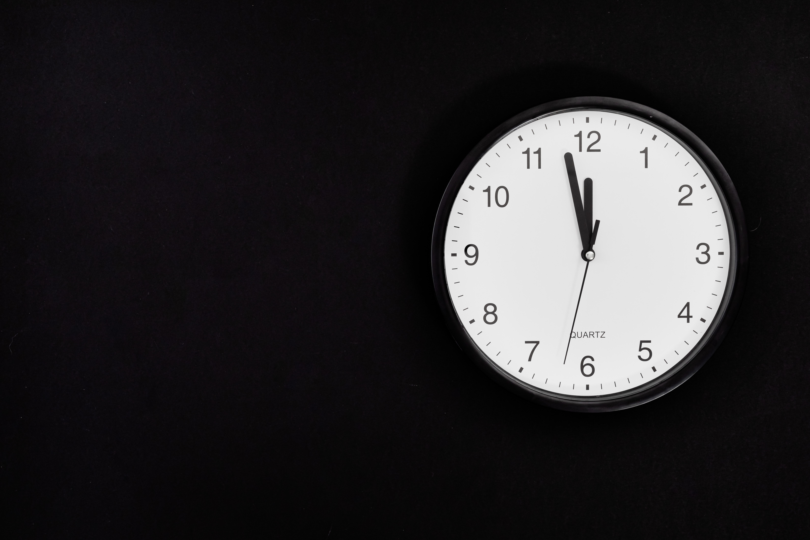

Email: Kaydon.Stubbs@gmail.com
LinkedIn: Kaydon Stubbs
Most things in the workfield are in Chaos. It is our responsibility to design and create healthy, robust and maintainable products. When we have products that are properly monitored its uptime will increase and you will have more confidence in your product.
- Find out what Broke
- Find out what caused the break
- Figure out how to automatically detect when something has broken
- Figure out how to automatically detect an imminent failure
- Figure out how to harden upstream to prevent the break.
These five steps seem simple and logical. They are logical. The problem is this is an ongoing process. You won't know what breaks until it has broken. You won't know what caused the break until it breaks and most likely until it breaks multiple times. Once you know why something is breaking then you can write something to help you detect that it is broken. After knowing what is broken and why it's broken you can then work on making a prediction when it will break. It is at this point that you can now go strengthen what is causing the break to occur. One of the scary things about this process is when the problem is not your code. It is said that 99% percent of the code you will interact with will not be your own. This could be any third party program working on someone else's hardware, or maybe an API you call to work with. Just because what most of the code you work with is not your own does not mean that you can't check and strengthen the information given to you.  Overall if you want your application to be robust and healthy you need to implement Telemetry. Without these measurements you will not know when you are having a problem unless you are actively watching your program. For me a little extra work of reporting is worth being able to sleep better at night.